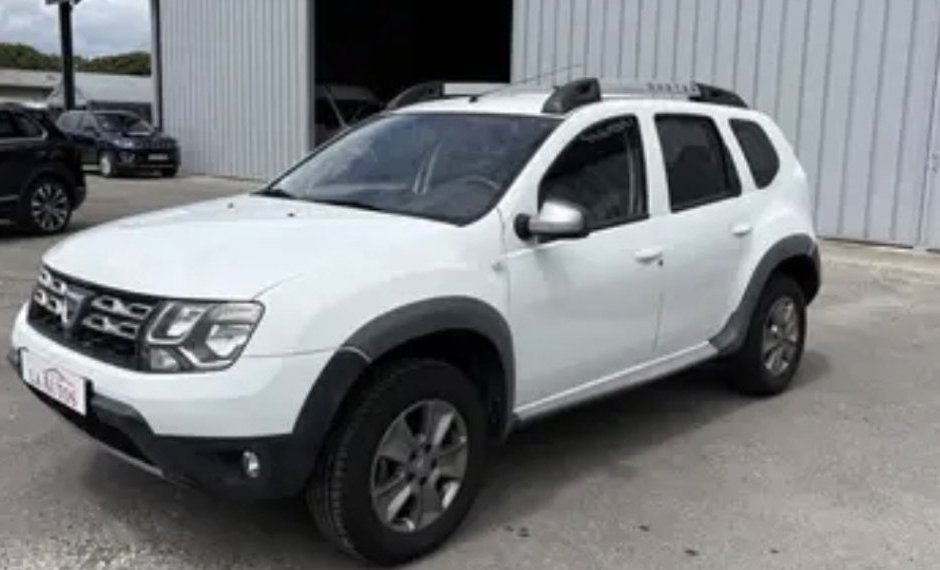
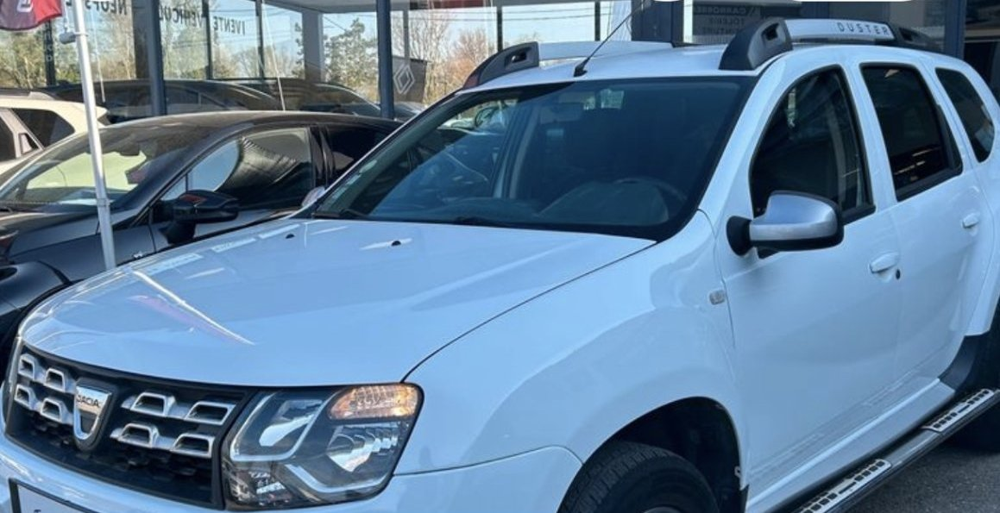

Dacia Duster — sélection
1.5 dCi 110 diesel, boîte manuelle, 4x2, budget environ 10 000 €.

Dacia Duster phase 2 — 1.5 dCi 110 Prestige
Année : 2016 Km : 128 842 km Prix : 9 990 €
Vendeur : L.A Autos Distinxion — Auch (32)
Garantie 3 mois, 2 propriétaires, Euro 6, Crit'Air 2, historique disponible.
Vérification vendeur
- Type : professionnel
- Adresse : 20 rue Roger Salengro, 32000 Auch
- Réseau Distinxion
- Société créée en 2020 ; site d'Auch ouvert le 12/12/2023
- Avis : 4,5/5
Voir l'annonce

Dacia Duster — 1.5 dCi 110 Prestige 4x2
Année : 2014 Km : 112 600 km Prix : 10 690 €
Vendeur : professionnel — Lectoure (32)
Rapport d'historique disponible. Annonce Leboncoin du 01/10/2026.
Vérification vendeur
- Type : professionnel
- Lieu : Lectoure (32700)
- Nom du garage : à confirmer
Lien de l'annonce à ajouter
Dacia Duster phase 2 — 1.5 dCi 110 Prestige
Année : 2016 Km : 78 750 km Prix : 12 650 €
Vendeur : Garage du Midour — Nogaro (32)
Vérification vendeur
- Type : professionnel — agent Renault / Dacia
- Adresse : Nogaro (32110)
- Société créée en 1964
- Avis : 4,5/5 (54 avis)
- Aucune procédure collective connue
Voir l'annonce